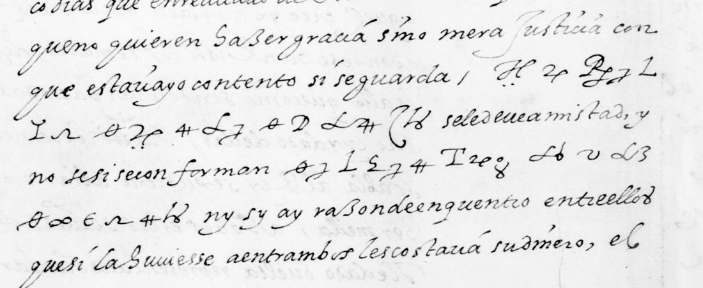

01 The letter and its two cipher passages
The five written pages discuss money, services, court business, military news and marriage negotiations. The last page gives Madrid, 8 August 1596, and Matheo de Segura's signature. The cipher occupies only brief passages on f. 196v and f. 197r. The clear pages provide context; none supplies a decipherment of the encrypted words.
Direct Gallica access failed during this attempt. Full-resolution Wikimedia Commons mirrors supplied the images. The often-repeated locator “view 280” is not this letter: it shows folio 164. The correct image sequence is 336 = 196r, 337 = 196v, 338 = 197r, 339 = 197v and 340 = 198r.
02 Ponte, Escudero and a possible quarrel
Bold words were encrypted. Spaces, accents and punctuation are editorial; the surrounding clear Spanish is lightly normalized.
…que no quieren hazer gracia sino mera justicia, con que estaría yo contento si se guarda. A Ponte creo cierto se le deve amistad, y no sé si se conforman conforman él y Escudero, ni si ay razón de encuentro entre ellos, que si la huviesse a entrambos les costaría su dinero…

The decrypted letters run apon / tecreocierto / conformanelyes / cudero. “A Ponte” and “Aponte” are alternative segmentations; no first name is established. The clear se conforman followed by cipher conforman is awkward and is kept as written. In sense, Segura discusses friendship owed to Ponte/Aponte, whether he and Escudero agree, and the financial consequences of a quarrel. The clear text that follows says Segura does not want the Constable's money diminished by it and will return to Toledo to finish these matters.
03 “El mundo se acabará o morirá el rey”
Un consejero muy grave me ha dicho que han hecho aquí junta sobre la cometa que ha avido estos días, y dizen que el mundo se acabará o morirá el rey por setiembre. Él bien cerca dello paresce que anda. Creo en Dios.
“A very weighty councillor has told me that they have held a meeting here about the comet that has appeared these days, and they say the world will end or the king will die around September. He seems to be very close to it. I believe in God.”

The four decrypted lines are dizenqueelmundoseacabara / omoriraelreyporsetiem / breelbiencercadellopa / rescequeandacreoendios. The line break inside setiembre helps resolve an overwritten sign at the end of the second line. The final creo en Dios is kept; its punctuation and tone are interpretive. Segura is reporting a councillor's account. It does not establish an official council decision, and the comet has not been identified astronomically.
04 How the key was recovered
The first transcription had 114 tokens and wrongly treated several joined pairs as single signs. A Python homophonic solver failed; a guessed crib, pronostico, also failed and was discarded. A faster C# solver (simulated annealing) then tested three transcription variants, 250 restarts each, against the repository's Spanish Golden Age five-gram model. Only the variant that split the joined signs and temporarily merged dotted with undotted forms produced connected Spanish: dizen que el mundo, el rey, paresce que anda and Escudero.
The final segmentation was then fixed from the images, using the solver output only as a guide. Joined forms separate into qu, el and es; two signs attached to the clear introduction begin dizen. A final loop differs from the n-sign, and square and hooked c-like forms have different values. The final transcription keeps the dot distinctions and has 125 tokens in 35 sign classes. The key is a homophonic substitution with two nulls and one special sign for ll.
Published Descovar, Fuentes–Pimentel, Ibarra–Doria, Ibarra–Zúñiga and Cg.13 inventories were compared without finding a match. The full Devos 1950 tables were unavailable, so that comparison is still to be made. No external plaintext was used. The decoder and saved key reproduce the decipherment and generate the sign-by-sign display above.
05 What is still tentative
There are no unassigned tokens, but six singleton values are grade M, depending on context. All other token values are grade I, inferred. None is graded H or C because no original key or independent plaintext was obtained. The 95.2% figure counts the proposed values after excluding the M grades; it is not a probability of correctness.
| Modern sign label | Proposed value | Where and why tentative |
|---|---|---|
| Hd | null | A, run 1: underdotted sign before apon |
| rd | null | A, run 2: deletion gives creo |
| openC | t | A, run 2: singleton in cierto |
| Q | n | A, run 3: singleton in conforman |
| X | m | B, line 2: overwritten sign in setiem-bre |
| ud | ll | B, line 3: dotted singleton in dello |
Dotted signs are not all nulls: the values ad=r, Yd=i and the tentative ud=ll are kept. The reconstructed key covers only the signs that occur here. Further key material could confirm or revise the singletons, the segmentation of the proper name and the awkward wording of the shorter passage.
06 Sources and files
- BnF, espagnol 336, no. 99, ff. 196r–198r, views 336–340; cipher on 337–338.
- Wikimedia Commons, view 337 and view 338, mirrors of the BnF scans.
- Satoshi Tomokiyo, George Lasry's solutions, Spanish ciphers and unsolved ciphers list, consulted 23 September 2026. These list the Segura item as undeciphered (no decipherment known); other letters in this volume have earlier solutions.
- J. P. Devos, Les chiffres de Philippe II (1555–1598) (1950): suggested comparator, full tables not obtained.
- Reading and apparatus; reconstructed key; all token grades; reproducible decoder.
.jpg){kind=link}
.jpg){kind=link}
Transcriptions, failed searches, solver logs, measured coverage and limitations are preserved in the repository folder.